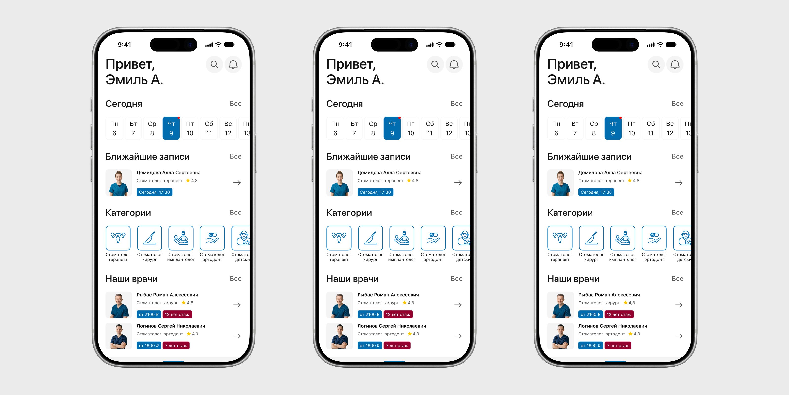

Разработал концепт мобильного приложения стоматологической клиники. Основной задачей было спроектировать интуитивно понятный интерфейс с нуля. Продумал структуру каталога врачей, карточку записи и систему напоминаний так, чтобы пользователь тратил на запись минимум действий и не терялся в интерфейсе.

В основном это сегмент 25-45 лет, те кто откладывает визит к стоматологу, потому что записываться по телефону неудобно. Еще одна группа: родители, которым нужно быстро найти время для ребёнка без лишних звонков и ожидания.
| Алексей | Екатерина | |
|---|---|---|
| Возраст | 34 года | 41 год |
| Город | Москва | Казань |
| Семья и работа | Женат, двое детей. Имеет свой бизнес, часто ездит в командировки | Замужем, двое детей. Работает учителем |
| Проблема | Кариес и пародонтоз | Повышенная чувствительность зубов |
| Поведение | Часто откладывает визит к врачу из-за нехватки времени | Стремится заботиться о здоровье, но не всегда находит время для регулярных походов к стоматологу. Также нужно записывать детей на приём, поэтому важна быстрая запись без лишних звонков |
Разобрал ДокДок, ПроДокторов и YClients. Общие проблемы: запись скрыта за фильтрами вместо календаря, обязательная регистрация до брони и перегруженная карточка врача, из-за которой теряется главное действие — выбор слота.